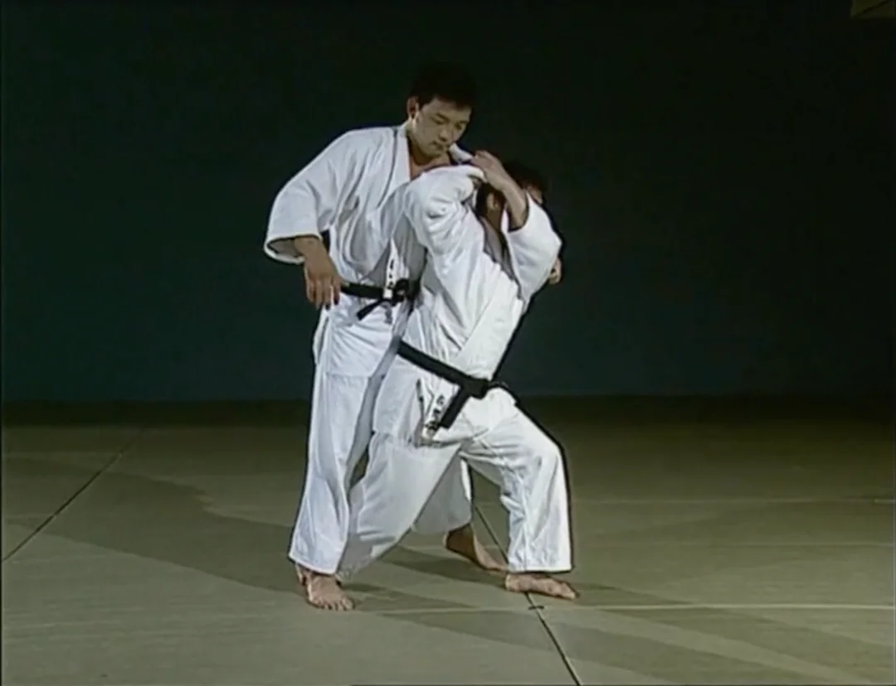
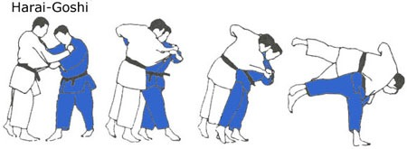

О-сото-гари
Большой внешний зацеп. Один из самых эффективных бросков в дзюдо.
Иппон-сэои-нагэ

Бросок через плечо с захватом одной руки.
Учи-мата
Внутренний подхват — мощный атакующий бросок.
Хараи-гоши

Подсечка бедром с sweeping движением.
Тай-отоши
Бросок через корпус с блокировкой ноги.